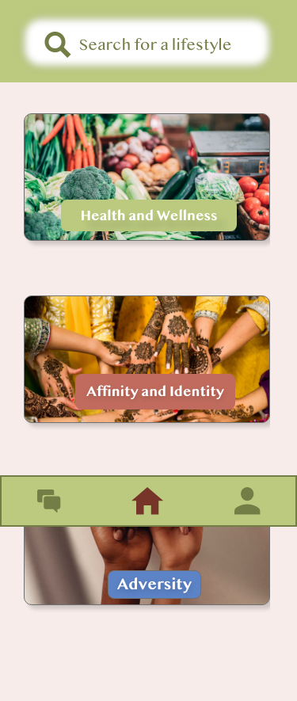
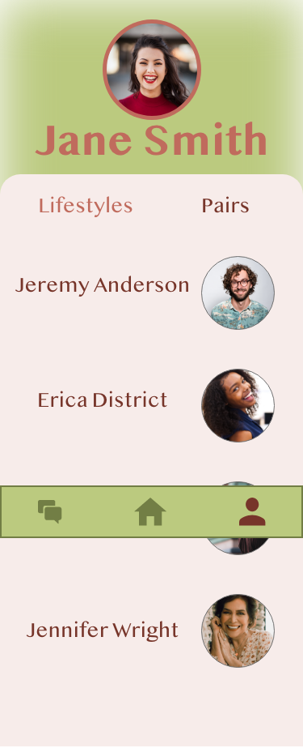
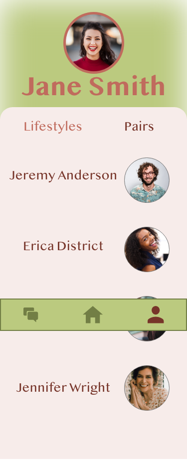

This project depicts a social mobile app. The product is meant to be tested for usability and ease. From this project I was able to build skills in style consistency from page to page.
 

For this assignment, I was able to leverage user testing in order to integrate consumer usability into my prototype.